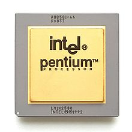

Automating Mathematics?
Siddhartha Gadgil
Department of Mathematics
Indian Institute of Science
Bangalore
- Can computers acquire all the major capabilities used by mathematicians and the mathematics community in the discovery and proof of mathematical results and concepts?
- When? How?
- Computers are already used in several ways.
- Capabilities in other cognitive domains that suggests they can do much more.
- Automated theorem proving is closely related to computer verification of proofs.
Computer Proofs
in
Mathematics
Cdang Derivative work: Muskid, CC BY-SA 3.0, via Wikimedia Commons
{kind=link}
Universal deducer?
- A universal deducer is a program which, given a mathematical statement, either proves it is true or proves it is false.
- By results of Church, Gödel, Turing, such a program is impossible.
- Practically, we can conclude that there is no best deducer, as any given proof can be found by some deducer but no deducer can find all proofs.
Some computer-assisted proofs
- Four-colour problem: Any map can be coloured with at most $4$ colours.
- Kepler Conjecture: The most efficient way to pack spheres is the hexagonal close packing.
- Boolean Pythagorean triples problem: Is it possible to colour the positive integers either red or blue, so that if three integers $a$, $b$, $c$, satisfy $a^{2}+b^{2}=c^{2}$, they are not all the same colour?
- Smale conjecture for hyperbolic $3$-manifolds.
Some ways computers are used
- Numerical computation.
- Enumeration.
- Symbolic and computational algebra.
- Compact enumeration.
- Exact real number arithmetic.
- Linear programming.
- Decidability of real semi-algebraic geometry.
- SAT solvers and SMT solvers.
Robbins conjecture
- Robbins conjecture was a conjectural characterization of Boolean algebras in terms of associativity and commutativity of $\vee$ and the Robbins equation $\neg(\neg(a\vee b)\vee \neg(a \vee \neg b)) = a$.
- This was conjectured in the 1930s, and finally proved in 1996 using the automated theorem prover EQP.
- So far, this seems to be the only major success of fully autonomous deductive theorem provers.
Interactive Theorem Provers
Interactive Theorem Provers
- Interactive Theorem Provers are software systems where proofs are obtained by human-machine collaboration.
- The computer both finds (parts of) proofs and verifies correctness.
- The ease of proving in such systems depends on how concise and composable proofs are and the strength of its elaborator and tactics.
- The former depends on foundations and the latter is essentially automated theorem proving.
Who guards the guards?
- A computer verified proof is only as trustworthy as the system that verified the proof.
- Following the de Bruijn principle, proofs are verified by a small trusted kernel, which can be thoroughly checked.
- For example, the lean theorem prover has three (small) proof checkers written in three languages.
- The Feit-Thompson theorem has been formalized in the system Coq by Georges Gonthier and others.
- The lean mathematical library has formalizations of a lot of undergraduate mathematics and many advanced results.
- These not only show that formalization is feasible, but can form data for both machine learning and advanced semantic searches and other tooling.
Formal methods
Mathematical proofs elsewhere
Formal methods
- We specify (describe) software, hardware etc. in precise mathematical terms.
- We give mathematical proofs of correct behavior, which are computer verified.
- This gives a much greater certainty of correctness.
- However, proofs are much harder than tests.
- Formal proofs use interactive theorem provers; with better provers we can prove more often.
Do we need completely correct always?
|  | Pentium FDIV Bug | Fixing an error is very costly |
| Therac 25 radiation machine | Safety critical | |
 |
WhatsApp Pegasus attack | A bug is a vulnerability |
Some users of formal methods
 |
Intel Chips | Fixing an error is very costly |
| Paris driverless metro | Safety critical | |
 |
Scala dotty compiler | A bug is a vulnerability |
Computers
and Games
Programming a Computer for Playing Chess
- Playing Chess can be based on
- judging the value of a fixed players position.
- a policy: sequences of moves to consider.
- We compute (and use) the value at the end of sequences moves we consider.
- We recursively decide the best moves by minimax — alternately maximizing and minimizing.
- We refine using various heuristics, such as quiescence search and $\alpha-\beta$ pruning.
- Openings give a policy, as do endgame tables.
Kasparov vs Deep Blue
- In 1997, a computer Deep Blue defeated the Chess world champion Gary Kasparov.
- Deep Blue was based on extending the above methods to elaborate (rule based) values and policies (chess theory), and improved heuristics.
- However, Deep Blues was very limited in certain capabilities.
- The value and policy functions of Kasparov were far better, but compensated for by Deep Blue being able to consider far more move sequences.
AlphaGo vs Lee Sedol
- In the chinese game Go, the number of legal moves is much larger, so trying everything means we cannot look many moves ahead.
- More importantly, it is very hard to describe a good value function (we use tacit knowledge).
- This makes it far harder for computers.
- Yet, in March 2016, a Go playing system AlphaGo defeated 18-time world champion Lee Sedol.
- In January 2017, AlphaGo defeated the world number one Ke Jie comprehensively.
AlphaGo and Learning
- The policy and value functions of AlphaGo are deep neural networks that were trained.
- The policy network was initially trained by learning to predict the next move from games of expert players (behaviour cloning).
- The value network was trained by AlphaGo playing against versions of itself.
- AlphaGo considered fewer sequences of moves than Deep Blue.
- AlphaGo came up with unexpected moves.
Deep learning (policy).
- We search for an optimal policy in a space of functions smoothly parametrized by $\mathbb{R}^N$ with respect to an appropriate smooth loss.
- The space of functions we consider are compositions of the form $$\Phi = \Psi_k\circ \Psi_{k -1}\circ \dots \circ \Psi_1,$$ where the functions $\Psi_j$ are layers, and are smoothly parametrized by $\mathbb{R}^{n_j}$, with $N = n_1 + n_2 + \dots + n_j$.
- A dense layer is a function of the form $y = \sigma(Ax + b)$, where $A= (a_{ij})$ is a linear function, $b$ a vector, and $\sigma$ is $x\mapsto e^x/(1 + e^x)$ applied component-wise.
- This is parametrized by entries of $A$ and $b$.
- In a convolutional layer, the linear function $A$ is a convolution, e.g., $y_j = \sum_{k} a _k x_{j - k}$.
- To get a probability distribution, we use as the last layer softmax: $y_j = \frac{e^{x_j}}{\sum_i e^{x_i}}$.
- Optimization is by variations of gradient flow.
- By chain rule, this can be computed layer-by-layer (backward propagation).
AlphaGo Zero and Alpha Zero
- AlphaGo was succeeded (and defeated) by AlphaGo Zero, which learnt purely by self play.
- Its successor, AlphaZero, could master a variety of similar games starting with just the rules.
- AlphaZero took just 4 hours to become the strongest chess player on the planet (beating a traditional chess program, Stockfish).
- AlphaZero “had a dynamic, open style”, and “prioritizes piece activity over material, preferring positions that looked risky and aggressive.”
Artificial Intelligence elsewhere
Word Embeddings
- To give words a structure and capture relations, words are embedded as points in space.
- To do this, (in Word2Vec) we set up the problem of predicting a word given its neighbours.
- We look for solutions of this problem that involve mapping words into space, and predicting from neighbours using the points.
- Analogies such as Paris is to France as Madrid is to Spain are captured by vector operations.
Generative Query network
- In an artificial 3D environment, the network observes 2D images from a few positions.
- It has to predict the observed image from a new position.
- To do this, the 2D image was mapped to a concise representation by a network, which was then used to predict the image from a different viewpoint.
- The concise representation factorized by colour, shape and size (among other things).
Generative Adversarial Network
- These consist of a pair of networks, contesting with each other.
- One network generates candidates (generative) and the other evaluates them (discriminative).
- For example the discriminative network tries to distinguish between real images and synthetic ones generated by the generative network.
Distributional reinforcement learning
- In temporal reinforcement learning, a network tries to predict (average) future rewards.
- However, sometimes the reward is either very big or very small, so the average reward is misleading.
- In distributional reinforcement learning we have several predictors, which react differently to positive and negative errors.
- Recently, similar distributions of dopamine cells was found in the brains of mice.
Attention is all you need
- The meaning of a word depends on the context, i.e., other words surrounding it.
- In the transformer architecture, this is captured by learning to which other words to pay attention for determining the next representation.
- The encoding of words includes position vectors, defined by using harmonics.
- This has lead to revolutionary improvements, including forming the basis for GPT 3.
- Attention networks are used in AlphaFold 2.
Emergent Semantics?
- In image processing, successive layers capture features at increasing levels of abstraction.
- Often (parts of) networks are shared, to better capture structure and meaning. For example, AlphaGo Zero learnt better in part by having a single neural network for policy and value.
- In zero-shot translation, a network translated between new pairs of languages; apparently based on an internal language.
Capabilities of Artificial Intelligence
- Make moves that we can appreciate.
- Judge value based on future rewards.
- Show originality.
- Acquire tacit (to us) knowledge.
- Work with limited and/or unstructured data, by self-play, using synthetic tasks and by self-supervised learning.
- Organize objects naturally and efficiently, capturing composition, abstraction etc.
- Discover concepts by solving problems?
Artificial Intelligence
for
Mathematical Proofs?
-
We can iteratively do and improve at doing:
- accumulate knowledge.
- digest the knowledge.
- solve (& pose) problems, prove theorems:
- whose answer we want,
- to accumulate knowledge,
- as exercises to digest knowledge.
- develop judgements: truth, importance, difficulty.
- Results may stagnate or be confined to some types and/or some areas.
- We need good constructions and choices for:
- outcomes,
- composite moves, hence parameters for policy,
- integration with experimentation,
- integration with domain specific solvers and other software,
- integration with (human) mathematics,
- strategies: e.g., how long to keep trying.
- Machine learning is being used in Automated and Interactive theorem proving for premise selection as well as choosing tactics and parameters.
- I have been working on a system which I call ProvingGround along the lines sketched here.
- It is also valuable to be able to learn from existing mathematics, which could use formalized libraries and natural language processing.
- However, for computer proofs to be useful, we would like to learn from computer proofs.
- A question on a blog of Terence Tao, asked to him by Apoorva Khare, was answered in PolyMath 14.
- A crucial step in the discovery was a computer generated but human readable proof I posted.
- The computer proof was studied by Pace Nielsen, who extracted the internal repetition trick.
- This was extended by Pace Nielsen and Tobias Fritz and abstracted by Terence Tao.
- From this Fritz obtained a key lemma, which was used by Terrence Tao to answer the question in the negative, and give a more general result.
- This was published as PolyMath 14 with 6 authors (including Lior Silberman).
- A natural question is the replicability of the computer proof, which was originally produced in an interactive session.
Indeed, a script gives a similar proof.